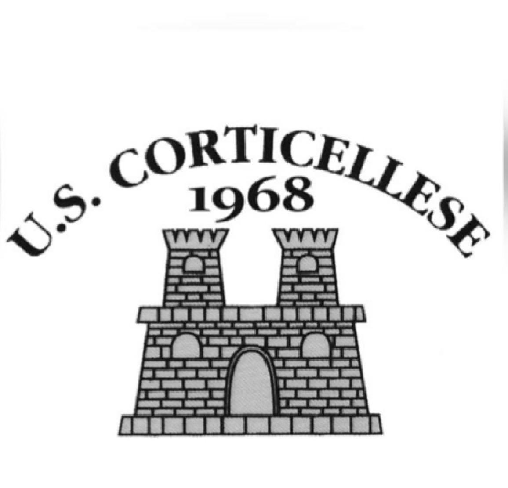
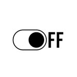

La stagione
Ultimi risultati
Risultati del girone
Calendario
Classifica
| Pos | Squadra | Pt | G | V | N | P | GF | GS | DR |
|---|
La nostra storia

Il calcio di Corticelle Pieve
L'Unione Sportiva Corticellese nasce nel 1968 a Corticelle Pieve, frazione di Dello, nella Bassa Bresciana. È una delle squadre più antiche del calcio dilettantistico bresciano e da più di mezzo secolo porta in campo il nome del paese.
Oggi la Corticellese gioca a calcio a 7 nei campionati del CSI Brescia e ospita gli avversari al campo dell'oratorio, in via Alessandro Manzoni.
- Fondazione
- 1968
- Anni di storia
- 58
- In campo
- 7contro 7
- Colori
- blu e bordeaux
-
1968
Nasce l'U.S. Corticellese. Lo stemma della società, con il castello, porta ancora questa data.
-
…
Gli anni da raccontare. Campionati, promozioni, giocatori e dirigenti che hanno fatto la storia: hai foto o ricordi? Scrivici su Instagram.
-
2024
Serie A di calcio a 7 del CSI Brescia. La Corticellese è iscritta alla Serie A maschile.
-
2026
Serie A Open, Girone A. Quattordici squadre, andata e ritorno, ventisei giornate.
Il nostro paese
A nord di Corticelle Pieve, in aperta campagna vicino al fiume Mella, sorge l'antica Pieve di Santa Maria Nascente, detta della Formigola. Dal 2001 l'associazione Amici della Pieve della Formigola si occupa del suo restauro e ogni ottobre organizza un festival di musica classica. Il paese ha dato i natali anche a fra Giacomo Bulgaro, per cui è in corso la causa di beatificazione.
Seguici · @u.s.corticellese
La Corticellese su Instagram
Partite, classifiche e risultati, allenamenti, la squadra e la tifoseria.
Sponsor
Grazie alle attività che sostengono la Corticellese.
- Enoteca contemporanea e wine bar · Dello Sito Instagram
- Centro servizi nastri e lamiere d'acciaio · Mairano Sito
-

Grafica, foto, video e artwork Instagram
Diventa sponsor
Metti la tua attività in squadra
Sostieni la squadra del paese e fai conoscere la tua attività a giocatori, famiglie e tifosi. Scrivici e ti raccontiamo come.